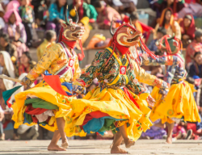
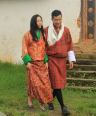

Traditional Dress and Cultural Identity of Bhutan
Bhutan is known for its rich culture, traditions, and unique national identity. Bhutanese people respect their customs and proudly celebrate traditional festivals, language, and clothing. Culture plays an important role in preserving the values and history of Bhutan.

The national dress of Bhutan is called Gho for men and Kira for women. These traditional clothes represent Bhutanese identity and are worn in schools, offices, temples, and important events. Wearing traditional dress shows respect for Bhutanese culture and heritage.

Modern technology and social media are influencing young people today. However, Bhutanese traditions should continue to be respected and protected. Families, schools, and communities can help preserve culture by teaching traditional values and encouraging people to wear national dress proudly.